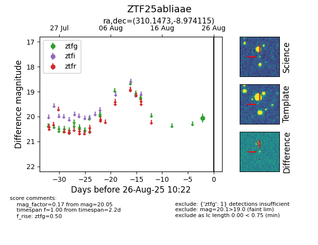

Target ZTF25abliaae at 2025-08-26 10:22, see:
FINK: fink-portal.org/ZTF25abliaae
Lasair: lasair-ztf.lsst.ac.uk/objects/ZTF25abliaae
ALeRCE: alerce.online/object/ZTF25abliaae
alt names
ZTF25abliaae (ztf,fink)
coordinates:
equatorial (ra, dec) = (310.1473,-8.97411)
galactic (l, b) = (37.3396,-28.30453)
photometry
last ztfg=20.05
1 ztfg detections
